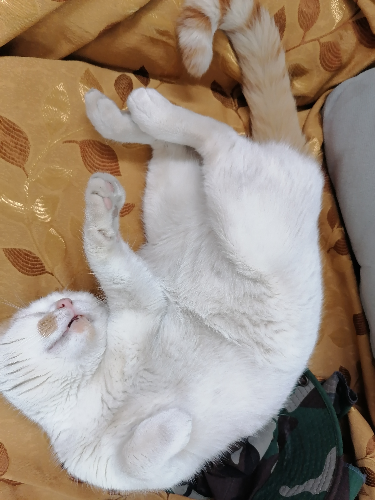
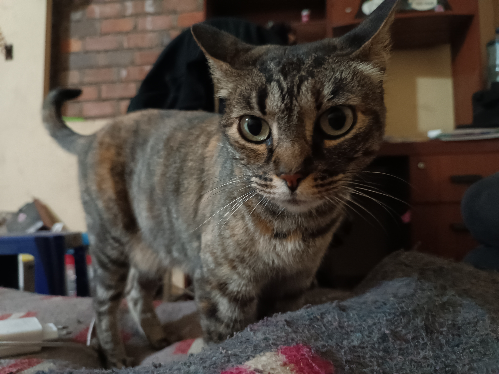
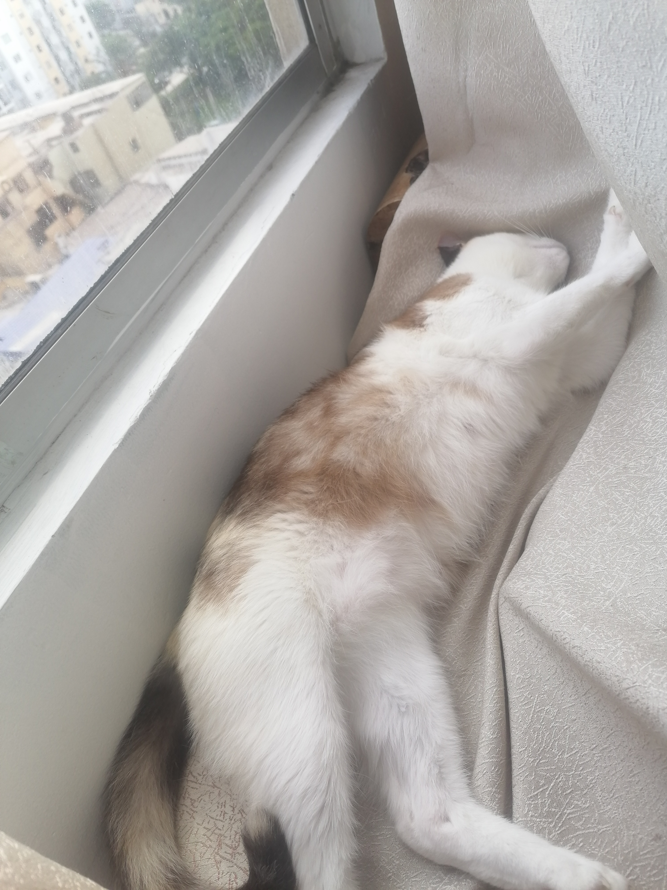

My Family's pets
About
As I got older, I took appreciation of how much pets helped many of the members both of my nuclear family and external family. There were many studies such as such as this one that lists the health benefits pets bring to a family. In my case, I found in some of them a bond closer to a child As for today, each of my relative's families adopted at least one mascot, varying between dogs & cats.
In this page I will describe 4 of the closest pets.
Pets
-
Okki

Some people abadoned him almost 5 years ago, when he had at most 3 months. He had many ticks, and a severe case of ehrlichiosis. We adopted him and gave him the proper medications, so now the ehrlichiosis is controled.
Description
- Playful
- He really wants to go out
- Likes to go to the beach
- Scared of the sound of the beach
-
Chity
This cat is really friendly. One of my family's cat brought him from outside, she found it and took care of him. He developed gingivitis but we took care of it.
Description
- Sweet
- He really lies to eat
- He is noisy
- Doesnt' like to take his medication
-
Isis
The way she was adopted was because it asked my godson to rescue him from a place where she was not loved. He felt sorry for him and got close to her. She is really like a vigilant in the house. Once there was an earthquake, and she screamed to wake us up to go out the house. She is really cute
Description
- Has a beautiful voice
- Ask politely about food
- She has a love/hate relationship with Okki
- Likes to be upstairs
-
Aisha
The youngest of the 4. She was actually adopted by my aunt, she was pregnant when she found her. The problem was that Aisha was rejected by the other cats my aunt's family has. My mother adopted her and gave her proper care. She is like a daugther to my parents.
Description
- Playful
- She likes to play hide & seek with us
- Has a good relationship with Okki
- Hates to take pills
Conclusion
These 4 were the pets that helped me during these last years. I will focus on improve myself to give them & my closest family a better quality life